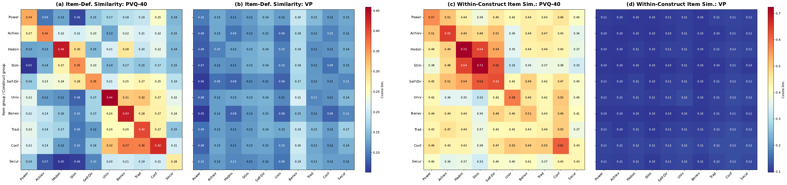

Human Psychometric Questionnaires Mischaracterize LLM Behavior
1Graduate School of Data Science, Seoul National University
2Department of Communication, Interdisciplinary Program in Artificial Intelligence, Seoul National University
* Equal contribution · † Corresponding author
TL;DR
Profiles of LLMs derived from human questionnaires (PVQ, BFI) do not match the profiles implied by what the models actually generate, so questionnaire scores alone are not evidence of LLM behavior.
In brief
We profile eight open-source LLMs in two ways: Likert self-reports on PVQ-40/21 and BFI-44/10, and the probabilities each model assigns to human-validated responses to real user queries (Value Portrait). We then ask four questions:
- RQ1 Do the two profiles agree?
- RQ2 Does the within-construct consistency seen on questionnaires also hold in generation?
- RQ3 Can LLMs tell which construct a questionnaire item measures, and does that explain the consistency?
- RQ4 Do persona-induced shifts on questionnaires carry over to generation?
Background: psychometric questionnaires are widely applied to LLMs on the assumption, borrowed from human psychology, that the resulting profile predicts behavior. This study tests that assumption directly.
Pick a model below: each line follows one value or trait from its rank under the questionnaire (left) to its rank under generation probability (right). Parallel lines would mean the two methods agree.
One model, two profiles: how the same constructs rank under each method
Left: constructs ranked by the model's Likert scores on PVQ-40 or BFI-44. Right: the same constructs ranked by the mean log-probability the model assigns to construct-tagged Value Portrait responses. Darker lines move three or more ranks. Scores are from Appendix Tables 13–16 of the paper; ρ and NDCG from Table 2. Hover a line to trace it.
What we found
- RQ1 · The profiles diverge. Questionnaires agree with each other (mean ρ .74–.77) but poorly with generation probabilities (ρ .11–.31), and the direction of the gap differs across models.
- RQ2 · Within-construct consistency disappears. Items of the same construct receive similar Likert scores (η² ≈ .5), but their generation probabilities scatter as widely as random groupings.
- RQ3 · Questionnaire items reveal their construct. LLMs recognize what an established item measures (F1 .69–.83) but not what a realistic scenario measures (.05–.11). Rewriting items to hide the cue weakens the consistency.
- RQ4 · Persona shifts do not carry over. Demographic persona prompts move questionnaire profiles the way human groups differ (cosine +.60), but move generation-probability profiles incoherently (−.03).
Questionnaire scores alone should therefore not be read as evidence of how an LLM behaves in realistic interactions. Generation-probability profiling over validated, realistic items is a complementary behavioral measure.
Two profiling methods
Both methods target the ten Schwartz basic values and the Big Five personality traits. The first asks the model to report on itself; the second reads the model's generation distribution over candidate responses to a real user. Figure 1 walks through both for one construct.
Generation-probability construct score.
Sc: scenarios with at least one response tagged with construct c; Rc,s: the tagged responses in scenario s; log P(r | s) is the summed token log-probability. Only within-model orderings are compared, and a sampling check confirms the candidate responses lie inside each model's own generation distribution.
Instruments
| Instrument | Items | Constructs | Scale | Source of profile |
|---|---|---|---|---|
| PVQ-40 | 40 | 10 Schwartz values | Likert 1–6 | self-report |
| PVQ-21 | 21 | 10 Schwartz values | Likert 1–6 | self-report |
| BFI-44 | 44 | 5 Big Five traits | Likert 1–5 | self-report |
| BFI-10 | 10 | 5 Big Five traits | Likert 1–5 | self-report |
| Value Portrait | 520 | 10 values + 5 traits | log-probability | generation |
Value Portrait: 104 real user queries (ShareGPT, LMSYS, Reddit, Dear Abby) × 5 candidate responses, validated with 681 human raters; 286 value-tagged and 228 trait-tagged item–construct pairs.
Models
Generation probabilities require token-level log-probabilities, so we use eight open-weight models from four families. Matched base checkpoints of four models are used in the instruction-tuning analysis of RQ3.
| Family | Smaller | Larger |
|---|---|---|
| Gemma 3 | 4B | 27B |
| GPT-OSS | 20B | 120B |
| Qwen 2.5 | 7B | 72B |
| Qwen 3 | 30B-A3B (MoE) | 235B-A22B (MoE) |
RQ1. Do established questionnaires and generation probabilities produce different profiles?
Yes. Questionnaires agree with each other, but neither agrees with the model's own generation probabilities.
We compare construct rankings with Spearman's ρ and NDCG, using the two questionnaires that target the same constructs (PVQ-40 vs PVQ-21, BFI-44 vs BFI-10) as a within-method reference. Within-method ρ averages .74 for values and .77 for traits; cross-method ρ drops to .31 and .28 for values and to .26 and .11 for traits, with several models negative. A paired sign-flip permutation test confirms the gap (values p = .004, traits p = .016), and it survives per-token length normalization. The direction of divergence varies from model to model, so no uniform post-hoc correction applies.
| Comparison | Gemma3 27B | Gemma3 4B | GPT-OSS 120B | GPT-OSS 20B | Qwen2.5 72B | Qwen2.5 7B | Qwen3 235B | Qwen3 30B | Avg. | ||
|---|---|---|---|---|---|---|---|---|---|---|---|
| Spearman ρ | Values | PVQ-40 ↔ PVQ-21 | 0.94 | 0.88 | 0.81 | 0.42 | 0.90 | 0.46 | 0.67 | 0.85 | 0.74 |
| Gen ↔ PVQ-40 | 0.26 | 0.10 | 0.27 | 0.26 | 0.72 | 0.45 | 0.52 | −0.08 | 0.31 | ||
| Gen ↔ PVQ-21 | 0.34 | 0.24 | 0.36 | −0.11 | 0.64 | 0.40 | 0.46 | −0.10 | 0.28 | ||
| Traits | BFI-44 ↔ BFI-10 | 0.70 | 1.00 | 0.90 | 0.67 | 0.90 | 0.92 | 0.21 | 0.89 | 0.77 | |
| Gen ↔ BFI-44 | −0.50 | 0.30 | 0.20 | 0.60 | 0.70 | 0.41 | 0.90 | −0.50 | 0.26 | ||
| Gen ↔ BFI-10 | −0.80 | 0.30 | 0.10 | 0.36 | 0.90 | 0.67 | 0.05 | −0.67 | 0.11 | ||
| NDCG | Values | PVQ-40 ↔ PVQ-21 | 0.81 | 0.98 | 0.87 | 0.71 | 1.00 | 0.91 | 0.99 | 1.00 | 0.91 |
| Gen ↔ PVQ-40 | 0.66 | 0.96 | 0.84 | 0.88 | 0.75 | 0.74 | 0.97 | 0.69 | 0.81 | ||
| Gen ↔ PVQ-21 | 0.77 | 0.96 | 0.97 | 0.64 | 0.75 | 0.66 | 0.97 | 0.68 | 0.80 | ||
| Traits | BFI-44 ↔ BFI-10 | 0.78 | 1.00 | 0.87 | 0.74 | 0.98 | 1.00 | 0.75 | 0.98 | 0.89 | |
| Gen ↔ BFI-44 | 0.62 | 0.72 | 0.68 | 0.95 | 0.78 | 0.76 | 0.98 | 0.61 | 0.76 | ||
| Gen ↔ BFI-10 | 0.57 | 0.72 | 0.66 | 0.68 | 0.87 | 0.76 | 0.65 | 0.57 | 0.69 | ||
Table 2 of the paper. Bold marks the highest value per model within each group.
RQ2. Does intra-construct response consistency hold for generation probabilities?
No. Same-construct items cluster on questionnaires and scatter like random groupings in generation probabilities.
Consistency across items of the same construct is often read as evidence of stable LLM dispositions. We measure between-construct differentiation with η² (variance in item scores explained by construct labels) and within-construct homogeneity with the within-model variance of z-scored item scores (WMV), each tested against its own permutation null. On questionnaires, construct labels explain about half of the variance (η² .526 for PVQ-40, .492 for BFI-44) with tight within-construct clustering. On generation probabilities, η² sits at the random baseline (p = .60 and .73) and WMV stays near 1.0. Scoring the same responses by held-out human raters instead of LLM probabilities recovers the structure (η² .084 vs a baseline of .023), so the null is specific to the models.
| Model | η² PVQ-40 | η² Gen. | WMV PVQ-40 | WMV Gen. |
|---|---|---|---|---|
| Qwen2.5-72B | 0.715 | 0.070 | 0.380 | 0.844 |
| Qwen2.5-7B | 0.598 | 0.034 | 0.422 | 0.889 |
| Qwen3-235B | 0.580 | 0.049 | 0.570 | 0.849 |
| Qwen3-30B | 0.339 | 0.040 | 0.862 | 0.945 |
| Gemma3-27B | 0.669 | 0.020 | 0.461 | 1.066 |
| Gemma3-4B | 0.601 | 0.029 | 0.533 | 0.978 |
| GPT-OSS-120B | 0.510 | 0.029 | 0.577 | 1.095 |
| GPT-OSS-20B | 0.200 | 0.032 | 1.019 | 0.880 |
| Random baseline | 0.231 | 0.040 | 1.025 | 1.003 |
| Median perm. p | 0.002 | 0.604 | 0.001 | 0.144 |
| Model | η² BFI-44 | η² Gen. | WMV BFI-44 | WMV Gen. |
|---|---|---|---|---|
| Qwen2.5-72B | 0.733 | 0.038 | 0.320 | 1.111 |
| Qwen2.5-7B | 0.513 | 0.021 | 0.553 | 1.234 |
| Qwen3-235B | 0.323 | 0.027 | 0.803 | 1.203 |
| Qwen3-30B | 0.619 | 0.014 | 0.465 | 1.082 |
| Gemma3-27B | 0.519 | 0.013 | 0.565 | 0.948 |
| Gemma3-4B | 0.787 | 0.007 | 0.250 | 1.088 |
| GPT-OSS-120B | 0.146 | 0.010 | 0.990 | 0.997 |
| GPT-OSS-20B | 0.300 | 0.016 | 0.791 | 1.177 |
| Random baseline | 0.093 | 0.029 | 1.022 | 1.008 |
| Median perm. p | <0.001 | 0.726 | <0.001 | 0.806 |
Table 3 of the paper. Higher η² and lower WMV mean stronger construct structure; WMV is read against its own baseline (≈ 1.0), not across methods.
RQ3. Can LLMs recognize the target construct from item text?
Yes for questionnaires, no for realistic scenarios. Hiding the cue weakens the questionnaire consistency.
An item such as “I see myself as someone who has a forgiving nature” names its construct almost outright, whereas a Value Portrait scenario tagged with the same construct carries no such lexical signal. We show each model an item and a construct definition and ask whether the item measures that construct. Mean F1 is .69–.83 on established items and .05–.11 on Value Portrait pairs, near chance, for every model. A sentence encoder with no LLM involved shows the same asymmetry, matching 77–81% of established items to the correct construct but only 11–26% of Value Portrait items. Because the target construct is legible, models can respond construct-consistently and in the socially desirable direction that alignment training rewards, without any stable disposition behind it.
| Model | PVQ-40 | PVQ-21 | BFI-44 | BFI-10 | VP |
|---|---|---|---|---|---|
| Gemma3-4B | 0.49 | 0.49 | 0.67 | 0.58 | 0.11 |
| Gemma3-27B | 0.65 | 0.68 | 0.81 | 0.73 | 0.11 |
| GPT-OSS-120B | 0.79 | 0.87 | 0.98 | 1.00 | 0.05 |
| Qwen2.5-7B | 0.79 | 0.83 | 0.70 | 0.67 | 0.07 |
| Qwen2.5-72B | 0.79 | 0.85 | 0.77 | 0.67 | 0.06 |
| Qwen3-30B | 0.68 | 0.67 | 0.95 | 0.93 | 0.10 |
| Qwen3-235B | 0.68 | 0.69 | 0.96 | 1.00 | 0.11 |
| Mean | 0.69 | 0.72 | 0.83 | 0.80 | 0.09 |
Table 4 of the paper: item–construct recognition, mean F1 across constructs. GPT-OSS-20B is omitted because of frequent null responses.
{kind=link}

Reducing construct cues
To test the transparency account directly, we rewrote all 84 PVQ-40 and BFI-44 items to make the target construct less obvious while keeping each item's construct, response format and keying. BFI-44 structure weakens in all eight models (η² .492 → .241, p = .004); PVQ-40 structure weakens less decisively (.526 → .432, 5 of 8 models, p = .078). On matched base and instruction-tuned checkpoints, instruction tuning raises PVQ-40 η² on the original items (.417 → .613) but not on the cue-reduced items (.453 → .447), suggesting that post-training amplifies value-specific responses only when the target value is easy to recognize.
RQ4. Do persona-induced shifts in questionnaire profiles carry over to generation behavior?
No. Personas move questionnaire answers the way human groups differ; generation probabilities move too, but not in the human direction.
We prompt seven models with eight demographic persona conditions (gender, age, political orientation, education) and compare each persona-induced shift in the Schwartz value profile against the corresponding subgroup difference in the European Social Survey. On PVQ-40 the shifts align with human patterns in all eight conditions (mean cosine +.60; 62 of 80 value dimensions shift in the human direction, p < .001). Generation-probability shifts do not (mean cosine −.03; 40 of 80, chance level), and contrasting personas produce opposite-sign similarities (Male −.59 vs Female +.62). Questionnaire shifts are also about three times larger than the human subgroup differences on a relative scale (.67 vs .20), so questionnaires overestimate how faithfully an LLM can enact the psychology of a demographic persona.
| Category | Persona | PVQ-40 | PVQ-21 | VP |
|---|---|---|---|---|
| Gender | Male | +0.68 | +0.42 | −0.59 |
| Female | +0.06 | +0.13 | +0.62 | |
| Age | 20–39 | +0.95 | +0.60 | −0.26 |
| 80+ | +0.89 | +0.82 | +0.05 | |
| Political | Right-wing | +0.70 | +0.69 | −0.69 |
| Left-wing | +0.86 | +0.78 | +0.65 | |
| Education | Below university | +0.53 | +0.71 | −0.40 |
| University+ | +0.10 | −0.42 | +0.35 | |
| Mean | +0.60 | +0.47 | −0.03 | |
Table 5 of the paper: cosine similarity between persona-induced LLM value shifts and human subgroup shifts. Gemma3-4B is excluded for high non-response under persona prompting.
Persona prompt, one of eight conditions
Injected as the system message; the questionnaire items and the Value Portrait prompts are unchanged from RQ1.
Takeaways
- A questionnaire score is evidence about how a model answers questionnaires, not about how it responds to users.
- Within-construct consistency on established instruments largely reflects item transparency and socially desirable responding rather than stable dispositions.
- Persona prompting looks convincing on questionnaires and incoherent in generation; claims of demographic simulation should not rest on questionnaire shifts alone.
- To characterize behavior, complement questionnaires with generation-probability profiling over validated, realistic items.
Limitations. The method needs token-level log-probabilities, which external evaluators may not get from proprietary APIs; the behavioral analysis relies on a single benchmark; and RQ4 uses the ESS, which has no Big Five reference. The score is computed over fixed, validated candidate responses and does not directly measure free-form generation.
BibTeX
@misc{song2026humanpsychometricquestionnairesmischaracterize,
title={Human Psychometric Questionnaires Mischaracterize LLM Behavior},
author={Woojung Song and Dongmin Choi and Yoonah Park and Jongwook Han and Eun-Ju Lee and Yohan Jo},
year={2026},
eprint={2509.10078},
archivePrefix={arXiv},
primaryClass={cs.CL},
url={https://arxiv.org/abs/2509.10078},
}